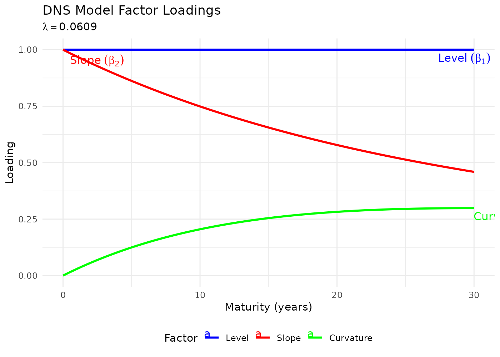
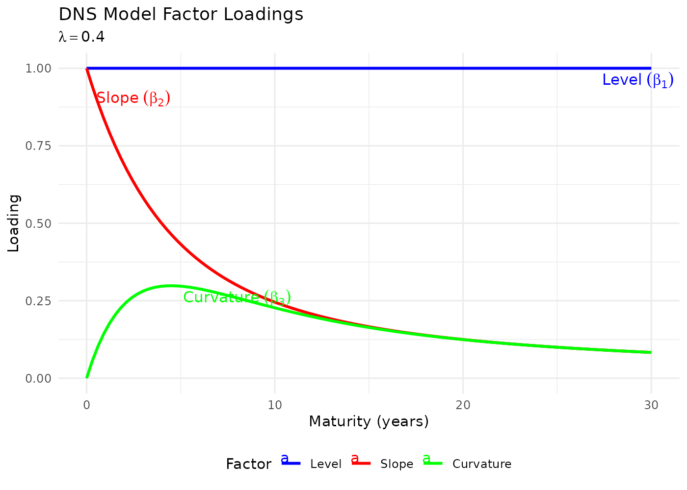
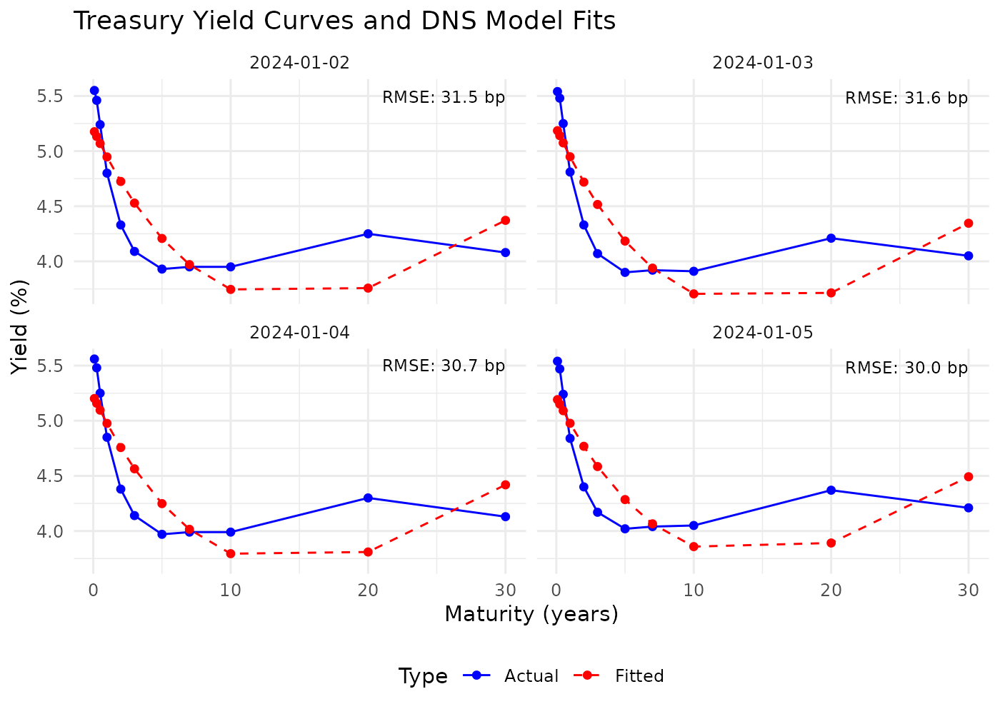
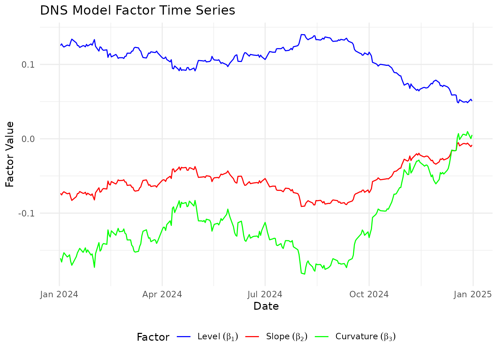
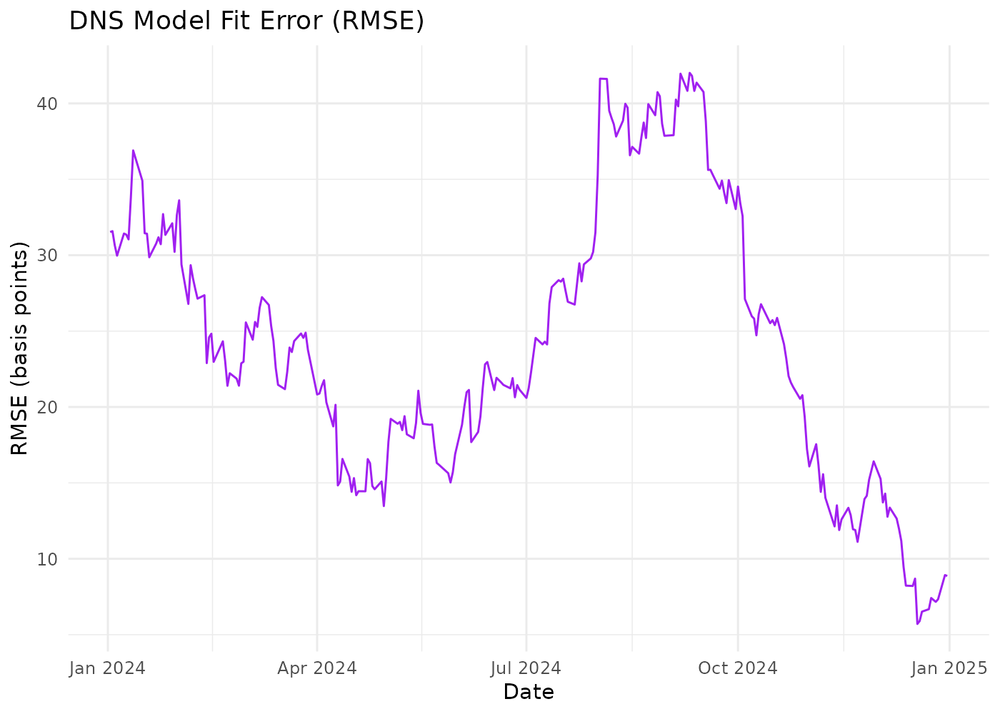
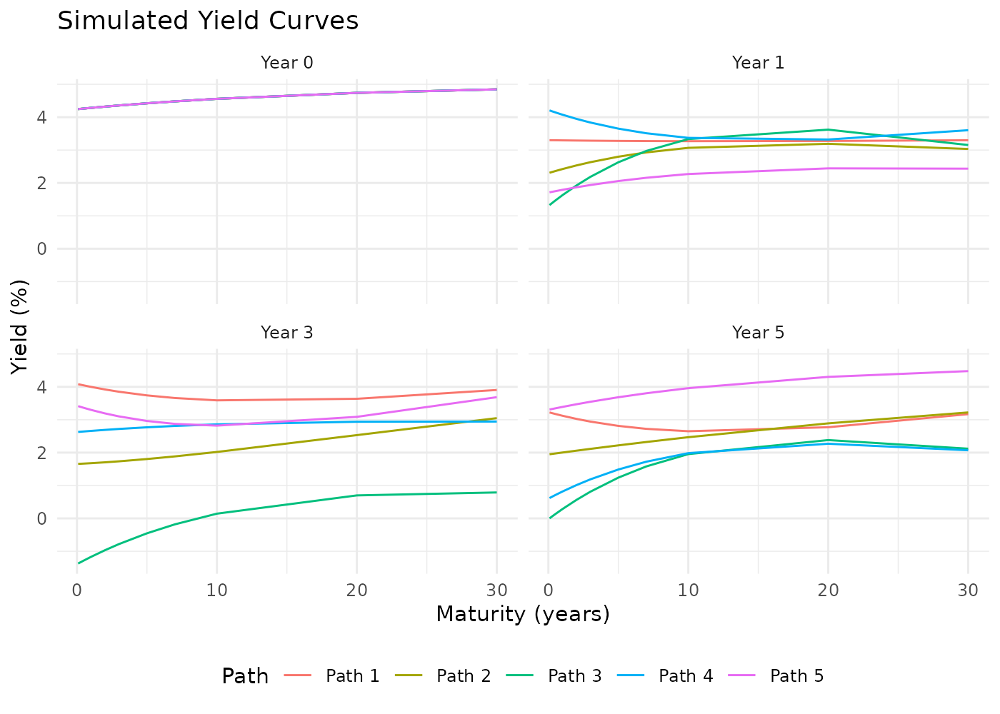
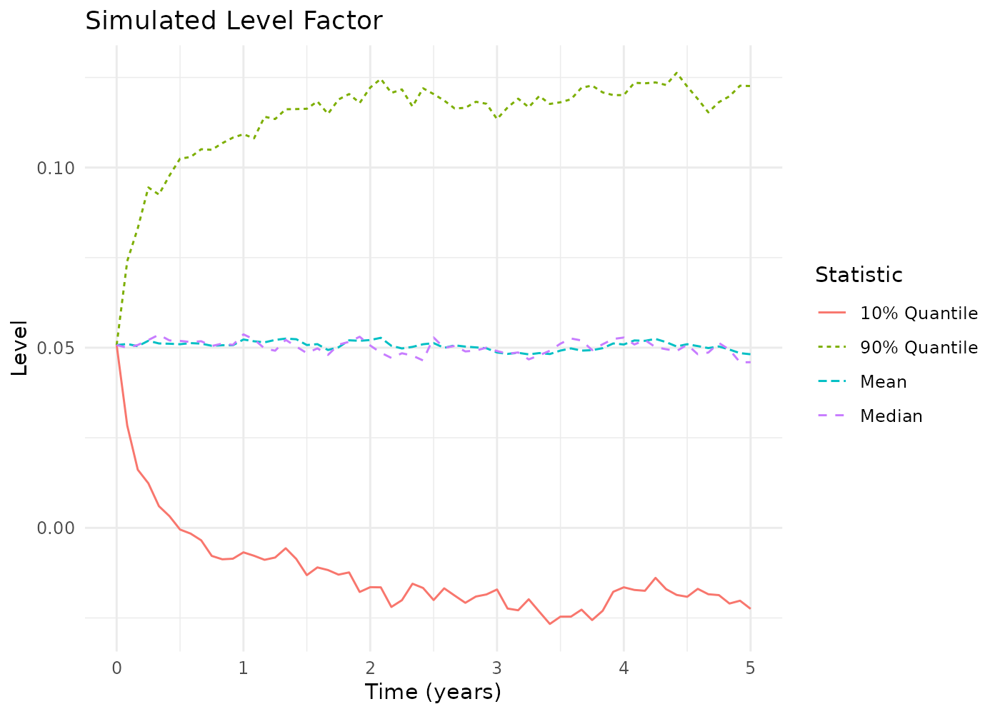
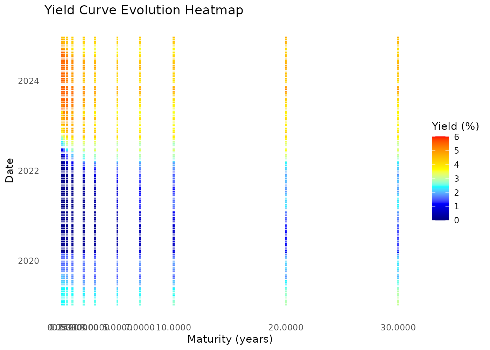
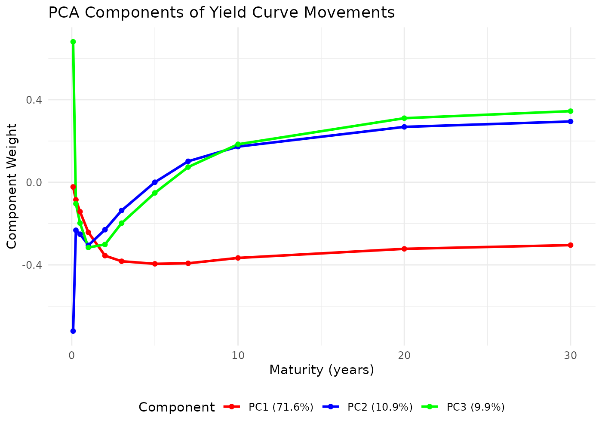
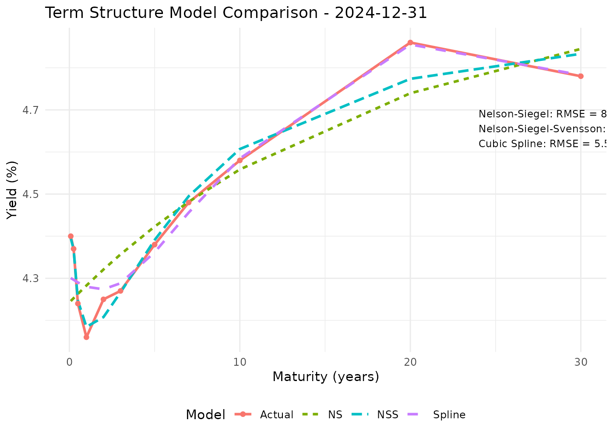

Introduction to the Dynamic Nelson-Siegel Model
dnsr package
2026-10-09
Source:vignettes/dns-model-introduction.Rmd
dns-model-introduction.RmdOverview
The dnsr package implements the Dynamic Nelson-Siegel
(DNS) model for yield curve modelling. This vignette walks the whole
workflow: fitting the curve, estimating how its factors move, simulating
forward, and pricing off the result.
Everything here runs against treasury_yields, a six-year
panel of real U.S. Treasury curves that ships with the package, so none
of it needs a FRED API key. For live data see
vignette("fred-api-setup", package = "dnsr"), and for the
YUIMA simulation engine see
vignette("dnsr-yuima-integration", package = "dnsr").
library(dnsr)
data(treasury_yields)
dim(treasury_yields)
#> [1] 1501 12
range(treasury_yields$Date)
#> [1] "2019-01-02" "2024-12-31"The frame is the shape every function in the package expects: a
Date column followed by one column per maturity, named by
maturity in years, with yields in decimal form.
treasury_yields[1:3, 1:6]
#> Date 0.0833 0.25 0.5 1 2
#> 1 2019-01-02 0.0240 0.0242 0.0251 0.0260 0.0250
#> 2 2019-01-03 0.0242 0.0241 0.0247 0.0250 0.0239
#> 3 2019-01-04 0.0240 0.0242 0.0251 0.0257 0.0250The Nelson-Siegel Model
The Nelson-Siegel model is a parsimonious parametric model for the yield curve. It expresses the yield at each maturity through three factors:
where
- is the yield at maturity ,
- is the long-term level of interest rates,
- is the slope, short-term minus long-term,
- is the curvature, the size of the hump,
- controls how fast the factor loadings decay.
The loadings are what give each factor its interpretation: the level loads equally on every maturity, the slope loads most at the short end and decays to zero, and the curvature peaks in the middle of the curve.
plot_dns_loadings(lambda = 0.0609)
Raising pulls the curvature hump toward shorter maturities:
plot_dns_loadings(lambda = 0.4)
Dynamic Extension
The DNS model lets the three factors vary over time, each as an Ornstein-Uhlenbeck process:
with the speed of mean reversion, the long-run mean, the volatility and a Wiener process. Fitting the curve is therefore two steps: a cross-sectional fit on each date, then a time-series estimate of how the resulting factors move.
Fitting a Single Curve
fit_ns_model() fits one cross-section. The
"profile" method solves the three betas in closed form at
each
and searches only over
,
so it needs no starting values:
maturities <- as.numeric(setdiff(names(treasury_yields), "Date"))
latest <- as.numeric(treasury_yields[nrow(treasury_yields), -1])
curve <- fit_ns_model(maturities, latest, method = "profile")
#> Warning in fit_ns_model(maturities, latest, method = "profile"): Nelson-Siegel
#> fit rests on a parameter bound (lambda); the factor decomposition is not
#> identified. Widen lower_bounds/upper_bounds or check the yield scale.
curve
#> Nelson-Siegel curve fit
#> beta1 (level) 0.04988
#> beta2 (slope) -0.00617
#> beta3 (curvature) -0.01404
#> lambda 0.50000
#> rmse 4.95 bp over 11 maturities
#> at bound lambda (decomposition not identified)That warning is worth taking seriously rather than silencing. The fit
reports any parameter that came to rest on one of its bounds, because a
clamped fit can still look respectable on RMSE while the factor
decomposition means nothing, and L-BFGS-B reports
convergence at a bound, so success alone cannot tell
you.
curve$at_bound
#> beta1 beta2 beta3 lambda
#> FALSE FALSE FALSE TRUEHere the default ceiling on , 0.5, is genuinely binding: this curve wants a faster decay than the conventional value allows. Given room, it finds an interior optimum and fits better:
wider <- fit_ns_model(maturities, latest, method = "profile",
lower_bounds = c(-1, -1, -1, 0.01),
upper_bounds = c(1, 1, 1, 5))
c(lambda = wider$parameters[["lambda"]], rmse_bp = wider$rmse * 10000)
#> lambda rmse_bp
#> 0.6687707 4.4314318Fitting the Panel
fit_dns_model() fits every date. The window is selected
by date, so it does not matter which row order the panel arrives in.
For a panel there is a choice to make that does not arise for a single curve. If is estimated freely it varies from date to date – on this data from 0.04 to 0.50 – and then on one date does not mean the same thing as on the next, because the loading it multiplies has changed shape. The betas stop being a comparable time series, which is precisely what the next step needs them to be.
Standard DNS practice, following Diebold and Li, therefore fixes at a single value for the whole panel. It costs cross-sectional fit – about 14 basis points median here against 7 with free – and buys factors that can be modelled over time:
recent <- fit_dns_model(treasury_yields, n_days = 250, show_progress = FALSE,
lambda_constraint = "fixed", initial_lambda = 0.0609)
recent
#> Dynamic Nelson-Siegel fit
#> 250 curves, 2024-01-02 to 2024-12-31
#> maturities 0.0833 0.2500 0.5000 1.0000 2.0000 3.0000 5.0000 7.0000 10.0000 20.0000 30.0000
#> rmse 23.01 bp median, 42.01 bp worst
#> lambda 0.0609 median
#> success rate 100.0%summary() gives the distribution of each factor and of
the fit error:
summary(recent)
#> Dynamic Nelson-Siegel fit
#> 250 curves, 2024-01-02 to 2024-12-31, 100.0% fitted
#>
#> Factors:
#> min mean max sd
#> beta1 0.04832 0.10658 0.14015 0.02229
#> beta2 -0.09104 -0.05679 -0.00534 0.02056
#> beta3 -0.18200 -0.11474 0.00968 0.04603
#> lambda 0.06090 0.06090 0.06090 0.00000
#>
#> Fit error (basis points):
#> 0% 50% 95% 100%
#> 5.71 23.01 39.97 42.01Fitted curves against the observations:
plot_yield_curves(treasury_yields, recent, max_plots = 4)
And the factors over time:
factor_plots <- plot_factor_time_series(recent)
factor_plots$factors
factor_plots$rmse
Estimating Factor Dynamics
estimate_dns_dynamics() regresses each factor’s change
on its lagged level. By default it samples the factor series at
month-ends and estimates at
:
daily cross-sectional refits carry measurement noise that is serially
uncorrelated, and an OU regression on daily changes reads that noise as
mean reversion, inflating
by an order of magnitude.
Because the estimation uses month-ends anyway, fitting only those is
enough and is far quicker. warm_start = FALSE makes each
cross-section independent of which other dates are in the panel, so
these fits are the ones fitting every day would have produced:
month_ends <- treasury_yields[
!duplicated(format(treasury_yields$Date, "%Y-%m"), fromLast = TRUE),
]
monthly_fit <- fit_dns_model(month_ends, n_days = nrow(month_ends),
show_progress = FALSE, warm_start = FALSE,
lambda_constraint = "fixed",
initial_lambda = 0.0609)
dynamics <- estimate_dns_dynamics(monthly_fit$parameters)
dynamics
#> DNS factor dynamics
#> estimated on 2019-02-28 to 2024-12-31
#> sampling monthly (dt = 1/12), 71 observations
#> structure diagonal
#>
#> kappa se_kappa theta sigma half_life_y
#> level (b1) 0.6667 0.4748 0.0492 0.0620 1.0397
#> slope (b2) 1.2032 0.6338 -0.0215 0.0594 0.5761
#> curvature (b3) 0.8292 0.5299 -0.0181 0.1243 0.8360
#>
#> stable TRUE (eigenvalues 1.203 0.829 0.667)The standard errors are worth reading before anything is built on . Mean reversion is weakly identified in a sample this short, and the half-life interval says so:
dynamics$beta1$se
#> kappa theta sigma
#> 0.47482691 0.03849805 0.00527441
dynamics$beta1$t_value
#> kappa theta
#> 1.404094 1.276968
dynamics$beta1$half_life_ci
#> lower upper
#> 0.433937 Infalso carries a well-known upward small-sample bias of order in a sample of years, which these standard errors describe nothing about: they are sampling noise, not bias.
Factor innovations are correlated, and the simulation uses that:
round(dynamics$correlation, 3)
#> beta1 beta2 beta3
#> beta1 1.000 -0.980 -0.986
#> beta2 -0.980 1.000 0.974
#> beta3 -0.986 0.974 1.000A full mean-reversion matrix
By default the three factors revert independently.
structure = "full" estimates the Diebold-Li VAR(1) instead,
in which a shock to one factor pulls the others:
full <- estimate_dns_dynamics(monthly_fit$parameters, structure = "full")
round(full$kappa_matrix, 3)
#> beta1 beta2 beta3
#> beta1 -2.615 -6.952 0.802
#> beta2 2.334 5.767 -0.623
#> beta3 7.148 12.107 0.141The eigenvalues of that matrix decide whether the system is stable, which a diagonal reconstruction would get wrong whenever the cross terms matter:
Simulating Future Yield Curves
The factor system is a linear SDE whose diffusion does not depend on
the state, so its transition law over any step is a known Gaussian.
engine = "exact" samples that law directly: no
discretisation error at any step size, and no extra package.
latest_row <- monthly_fit$parameters[which.max(monthly_fit$parameters$Date), ]
initial_factors <- as.numeric(latest_row[c("beta1", "beta2", "beta3")])
sim_params <- dns_dynamics_to_sim_params(dynamics, lambda = latest_row$lambda)
simulation <- simulate_dns_yield_curves(
params = sim_params,
initial_factors = initial_factors,
maturities = maturities,
time_horizon = 5,
n_steps = 60,
n_paths = 500,
engine = "exact",
seed = 1
)
simulation
#> DNS simulation
#> 500 paths, 60 steps over 5 years
#> engine exact
#> terminal factors 0.0482 -0.0203 -0.0152
#> (sd) 0.0558 0.0402 0.1008
#> maturities 0.0833 0.2500 0.5000 1.0000 2.0000 3.0000 5.0000 7.0000 10.0000 20.0000 30.0000
#> terminal yields 2.79 2.79 2.80 2.81 2.82 2.84 2.88 2.92 2.99 3.22 3.43 (% mean)Simulated curves at a few horizons. The facets follow the calendar rather than sorting lexically, so “Year 5” comes after “Year 3”:
yield_plots <- plot_simulated_yields(
simulation,
time_points = c(0, 1, 3, 5),
path_subset = 1:5
)
yield_plots$yield_curves
The factor paths, as a fan of quantiles across all 500 of them:
plot_simulated_factors(simulation)$level
The YUIMA engine remains available and is the default, for the
estimation machinery that comes with it. See
vignette("dnsr-yuima-integration", package = "dnsr").
Pricing off a Fitted Curve
A fitted curve is only useful if it discounts cashflows. The DNS curve gives continuously compounded zero rates, so the discount factor at maturity is :
factors <- matrix(curve$parameters[1:3], nrow = 1)
lambda <- curve$parameters[["lambda"]]
coupon_maturities <- c(0.5, 1, 2, 5, 10, 30)
data.frame(
maturity = coupon_maturities,
zero_pct = round(calculate_dns_yields(factors, coupon_maturities, lambda)[1, ] * 100, 3),
discount = round(dns_discount_factors(factors, coupon_maturities, lambda)[1, ], 4),
price_100 = round(dns_zero_prices(factors, coupon_maturities, lambda)[1, ], 2),
par_pct = round(dns_par_yields(factors, coupon_maturities, lambda)[1, ] * 100, 3)
)
#> maturity zero_pct discount price_100 par_pct
#> 1 0.5 4.293 0.9788 97.88 4.339
#> 2 1.0 4.249 0.9584 95.84 4.295
#> 3 2.0 4.227 0.9189 91.89 4.272
#> 4 5.0 4.361 0.8041 80.41 4.400
#> 5 10.0 4.596 0.6316 63.16 4.614
#> 6 30.0 4.853 0.2332 23.32 4.827Par yields are the coupon rate that prices a bullet bond at par. They differ from the zero yields for two reasons that can pull in opposite directions: a compounding convention term, since the curve is continuously compounded while the par rate pays twice a year, and a shape term, since coupons are discounted at the earlier rates rather than the terminal one. The first dominates at the short end and the second further out.
Forward rates come off the same factors:
rbind(
spot = round(calculate_dns_yields(factors, coupon_maturities, lambda)[1, ] * 100, 3),
forward = round(calculate_dns_forwards(factors, coupon_maturities, lambda)[1, ] * 100, 3)
)
#> [,1] [,2] [,3] [,4] [,5] [,6]
#> spot 4.293 4.249 4.227 4.361 4.596 4.853
#> forward 4.234 4.188 4.244 4.649 4.936 4.988Looking at the Panel
A heatmap of the whole panel shows the 2020 collapse to near-zero short rates and the 2022-2023 inversion:
plot_yield_heatmap(treasury_yields)
Principal components of the daily changes. Decomposing the covariance matrix rather than standardising each maturity first is the usual convention for yield curves, and is what produces the familiar level, slope and curvature shapes:
pca <- plot_yield_pca(treasury_yields, scale = FALSE)
round(pca$var_explained[1:3], 4)
#> [1] 0.7160 0.1087 0.0991
pca$plots$weights
The first three components are the empirical counterpart of the model’s three factors, which is the reason a three-factor curve works as well as it does.
Comparing Term Structure Models
compare_term_structure_models() fits several curves to
one cross-section and reports the error of each, in basis points:
comparison <- compare_term_structure_models(
treasury_yields,
models = c("NS", "NSS", "Spline")
)
comparison$metrics
#> Model RMSE MAE MaxError
#> 1 Nelson-Siegel 8.873355 7.506098 15.404612
#> 2 Nelson-Siegel-Svensson 3.542643 2.502529 8.621915
#> 3 Cubic Spline 5.561295 3.995767 11.985578
comparison$plot
Nelson-Siegel-Svensson adds a second curvature term with its own decay, so it nests Nelson-Siegel and must fit at least as well; the question is whether the two extra parameters are worth it. A smoothing spline will generally beat both on in-sample error while saying nothing about the shape, which is the trade the parametric models exist to make.
Where to Go Next
# Live Treasury data, caching and the API key
vignette("fred-api-setup", package = "dnsr")
# The YUIMA engine, and quasi-maximum-likelihood estimation
vignette("dnsr-yuima-integration", package = "dnsr")get_calibrated_dns_params() wraps the whole path above
into one call, from downloading data to returning simulation-ready
parameters, for when the intermediate objects are not needed.